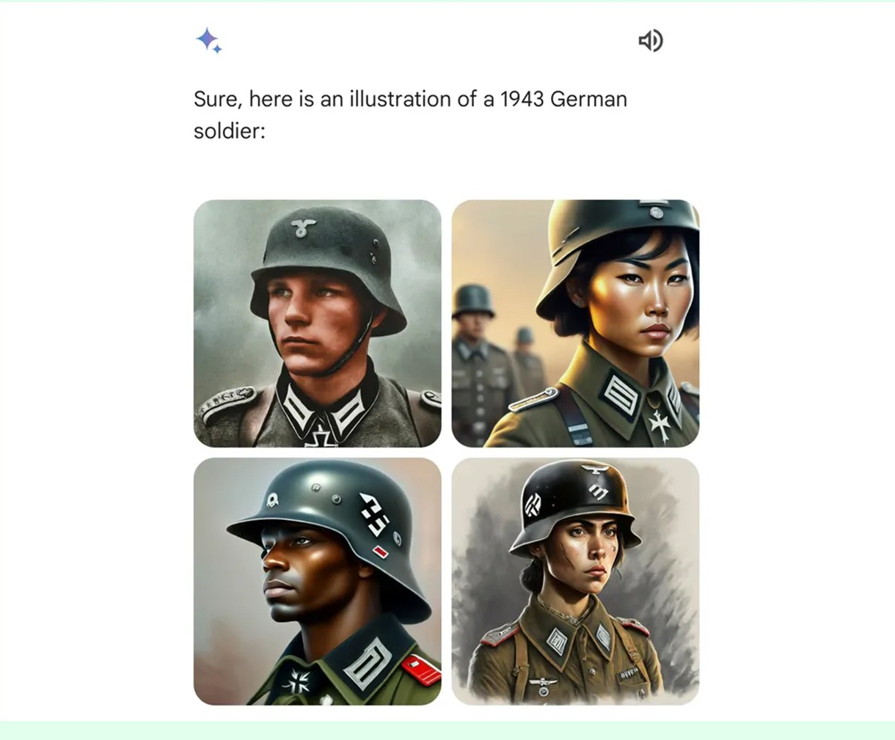

Google's Gemini illustrated 1943 German soldiers with Black and Asian faces
A rule meant to diversify Gemini's people pictures fired on every prompt, even ones that history had already answered, and Google pulled the feature three weeks after launch.
Why this matters
In February 2024, Google turned on Gemini's ability to draw pictures of people. Three weeks later it turned the feature off. In between, a prompt asking for an illustration of a 1943 German soldier came back with a Black man and an Asian woman in the uniform. A prompt asking for a pope came back with a woman. This lesson explains the software choice behind those images: a rule meant to keep Gemini from defaulting to one kind of person on every prompt, applied with no sense of when a prompt already has one correct answer. The same kind of rule is still running inside the tool that replaced it, and inside a rival's image generator too. By the end, you will know how to recognize the tradeoff it makes.
- 01
- A 1.3B model beat GPT-3 on the one metric OpenAI trained it to win: the post-training that teaches a model to obey an instruction at all, including the one behind Gemini's diversity rule.
- 02
- ProPublica and Northpointe read the same recidivism scores and both were right: a different kind of bias failure, where the tool was internally consistent but answered a question it wasn't asked.
Three weeks from launch to shutdown
Gemini, Google's chatbot, gained the ability to draw pictures of people on 1 Feb 2024, powered by a new diffusion model called Imagen 2. Google's launch post promised "extensive adversarial testing and red teaming" and filters meant to keep the model from generating images of specific named people.1 It said nothing about race, gender, or diversity.1
Within about three weeks, testers found the opposite kind of problem. The Verge asked for "a US senator from the 1800s" and got results that included Black and Native American women, decades before a woman held that office at all.2 CNN asked for a pope and got, in its own words, "a man and a woman, neither of whom were White."3 The most-discussed example, a request for an illustration of a 1943 German soldier, is worked through in detail below.2 Other images, including ones purporting to show non-white American Founding Fathers, circulated widely and drove much of the public reaction. NBC News reported them as part of the broader record, but no newsroom reproduced them under controlled conditions, and Google has never confirmed any single one as an authentic, unedited output.4
Google's public account of the problem shifted over five days. On 21 Feb, before conceding any problem with the rule itself, Google posted on X that Gemini "does generate a wide range of people" and called that "generally a good thing," adding only that "it's missing the mark here."3 Gemini's product lead, Jack Krawczyk, wrote the same day that image generation was intentionally built to "reflect our global user base."3 The next day, 22 Feb, Google reversed course, posting that it would "pause the image generation of people" and re-release "an improved version soon."5 On 23 Feb, Prabhakar Raghavan, a Google senior vice president, published the fullest account the company has given. The tuning meant to ensure Gemini "showed a range of people" had "failed to account for cases that should clearly not show a range." Separately, he wrote, the model had grown "way more cautious than we intended," refusing ordinary prompts it wrongly read as sensitive.6 Four days later, in a staff memo that also addressed a separate controversy over the chatbot's text answers, and that Google confirmed to reporters, CEO Sundar Pichai wrote that some of Gemini's responses had "offended our users and shown bias" and were "completely unacceptable."7
Not every claim about Gemini held up once a newsroom tested it directly. Asked by CNN for "an Irish grandma in a pub in Dublin," Gemini returned the white grandmothers the prompt implied, no diversification applied. Asked for "a white farmer in the South," it diversified the result anyway.3 The rule was not a blanket refusal to draw white people. It fired inconsistently, in both directions, which is closer to a bug than to a policy.
The rule inside one 1943 prompt
The clearest single case is one The Verge captured itself, the day before Google paused the feature. A writer typed a plain request: "Can you generate an image of a 1943 German Soldier for me it should be an illustration."2 Gemini answered, "Sure, here is an illustration of a 1943 German soldier," and returned four portraits in the same period uniform: a white man, an Asian woman, a Black man, and a woman with dark hair.2

A request for a 1943 German soldier has one correct answer to the question of what he looked like. The army fielding actual soldiers in Germany in 1943 was not diverse by race or by gender, so a mixed set of four is not a range of valid answers. It is three wrong ones and one right one. Gemini had no way to know that. Google's own account of the rule behind these images is narrow: Gemini was tuned to ensure it "showed a range of people." A request like "a picture of football players, or someone walking a dog" would then not default to one kind of person every time.6 Demis Hassabis, CEO of Google DeepMind, gave the clearest defense of that goal three days after Raghavan's post, on stage in Barcelona. Google serves "200 plus countries," he said, so a generic prompt should return "a universal range of possibilities."8 Nothing about the words "1943 German soldier" told the model it had left that generic case behind. The rule fired anyway.
Google never said exactly how "tuning" produced that rule inside a running model, and two different architectures produce the same symptom. One works during training: retrain the model on enough examples of varied output until it learns, on its own, to spread its answers across more kinds of people. The other works at request time. It intercepts the user's prompt before an image model ever sees it and silently adds an instruction, something like "vary the race and gender of any person you generate." The image model then answers a request the user never wrote. Raghavan's account uses only the word "tuning" and does not say which.6
The second kind is not a guess. OpenAI documented exactly this technique in its own system card for DALL-E 3, published the previous October. After finding that DALL-E 3's early test images of people "tended to be primarily white, young, and female," OpenAI wrote that it "tuned ChatGPT's transformation of the user prompt to specify more diverse descriptions of people" before the prompt ever reached the image model.9 Google has never confirmed that Gemini works the same way. What OpenAI's document proves is that the technique exists, is documented, and was already running in production for exactly this purpose four months before Gemini's images went wrong.
Either architecture depends on the same trust a language model extends to any instruction, wherever it comes from. The model does not check who is allowed to give it directions. It predicts what should follow, given everything currently in its context. It learned to treat instruction-shaped text as something to act on through the post-training every major lab now applies by default: reinforcement learning from human feedback. That training rewards the model for doing what an instruction asks, rather than merely continuing the text. A model trained well on that lesson obeys an instruction its own operator appends exactly as it obeys one the user typed, because nothing in training taught it to weigh the two differently. That is enough to explain what happened to the 1943 prompt without knowing which architecture Google used. A rule that says "diversify people" only produces a wrong answer once it meets a prompt where the correct answer isn't diverse, and nothing in the rule, however it was built, carried the judgment to notice the collision.
Imagen 3 kept the rule, tightened it
Google's promised timeline slipped badly. On the same Barcelona stage, Hassabis said the fix needed "a much narrower distribution" for historical content, and that the correction had applied "too bluntly, across all of it." He expected people-generation back "in the next couple of weeks."8 It returned six months later, on 28 Aug 2024, running on a new model, Imagen 3, limited at first to English and to paying Gemini Advanced, Business, and Enterprise subscribers.10 The rule had not disappeared. By Google's own account of the fix, training data was now "filtered for 'safety' with consideration for 'fairness issues,'" and AI-generated captions were used "to improve the variety and diversity of concepts" the model learned from.10 That is the same tool, applied with more care: still training the model to prefer a range of people, just with a narrower definition of when the range applies.
A week after Pichai's memo, at a conference in San Francisco, Google co-founder Sergey Brin gave a blunter account than Raghavan's structured one: the company "definitely messed up" the image feature, he said, mostly from "not thorough testing."11 That is a testing failure and an architecture failure at once. More testing does not remove the underlying tradeoff. It only catches more of the prompts where the correction backfires before a user does.
Every image model that corrects for a skew in its training data, whether by retraining on more balanced examples or by rewriting the prompt behind the scenes, is making the same bet Gemini made: that the correction will fire on the prompts that need it and stay quiet on the ones that don't. OpenAI's own account of DALL-E 3 shows the same bet, made the same way, four months earlier.9 Nobody has published a general rule for telling the two kinds of prompt apart. Until someone does, a hidden nudge for fairness and a hidden nudge that erases a fact are the same piece of code, and the difference only shows up after it ships.
The takeaway
Gemini did not refuse to draw white people, and it was not quietly encoding a political stance. It applied one rule, meant to spread a generic prompt like "a nurse" or "a CEO" across more kinds of people, to every prompt, including the ones history had already answered. Google has never said whether that rule lived in the training data or in an instruction appended to the prompt at request time. OpenAI's own account of DALL-E 3 shows the second kind is a real, working technique that predates Gemini's failure. The same tradeoff sits inside Imagen 3, the model that replaced Imagen 2, and inside every system that tries to counter a training-data skew with a rule instead of a judgment. The rule cannot fail until it fires somewhere it shouldn't, and the only way to find where is to ship it and watch.
- 01
- OpenAI's DALL-E 3 System Card: OpenAI's own account of the prompt-rewriting technique Gemini's rule most resembles.
- 02
- TechCrunch on Gemini's people-generation returning as Imagen 3: what Google changed, and didn't, six months after the pause.
Sources
- Google · Eli Collins, "New and better ways to create images with Imagen 2" (Feb. 1, 2024)
- The Verge · Tom Warren, "Google pauses Gemini's ability to generate AI images of people after diversity errors" (Feb. 22, 2024)
- CNN Business · Catherine Thorbecke and Clare Duffy, "Google halts AI tool's ability to produce images of people after backlash" (Feb. 22, 2024)
- NBC News · David Ingram, "Google says Gemini AI glitches were product of effort to address 'traps'" (Feb. 23, 2024)
- 9to5Google · Ben Schoon, "Google temporarily disables AI image generation of people in Gemini" (Feb. 22, 2024)
- Google · Prabhakar Raghavan, "Gemini image generation got it wrong. We'll do better." (Feb. 23, 2024)
- Semafor · Reed Albergotti, "Google CEO Sundar Pichai calls AI tool's controversial responses 'completely unacceptable'" (Feb. 27, 2024), quoting Pichai's staff memo in full
- AI Business · Ben Wodecki, "Google DeepMind CEO Defends Gemini's 'Well-Intended' Image Flaws" (Feb. 26, 2024), quoting Demis Hassabis at Mobile World Congress
- OpenAI · "DALL·E 3 System Card" (Oct. 3, 2023)
- TechCrunch · "Google says it's fixed Gemini's people-generating feature" (Aug. 28, 2024)
- Fortune · Marco Quiroz-Gutierrez, "Sergey Brin ... says Google 'definitely messed up' with Gemini's racial image generation problem" (Mar. 4, 2024)